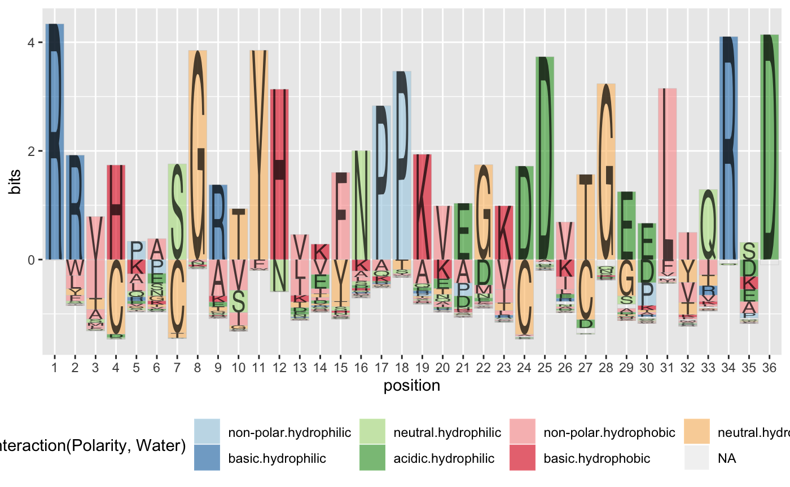

R package for creating sequence logo plots
gglogo is available from CRAN (version 0.0.2):
gglogo
install.packages("gglogo")
The development version is available from Github:
# install.packages("devtools") devtools::install_github("heike/gglogo", build_vignettes = TRUE)
Load the library
library(gglogo)
Load a dataset
data(sequences)
library(ggplot2) ggplot(data = ggfortify(sequences, peptide)) + geom_logo(aes(x = position, y = bits, group = element, label = element, fill = interaction(Polarity, Water)), alpha = 0.6) + scale_fill_brewer(palette = "Paired") + theme(legend.position = "bottom")
